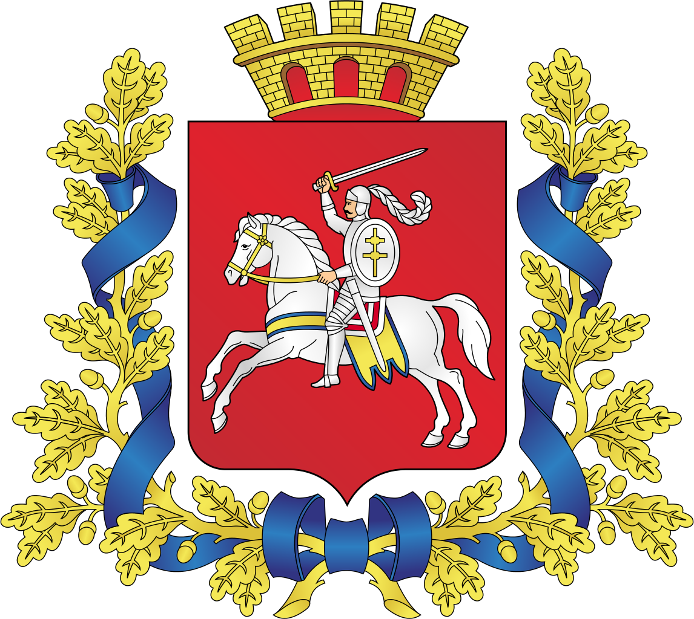
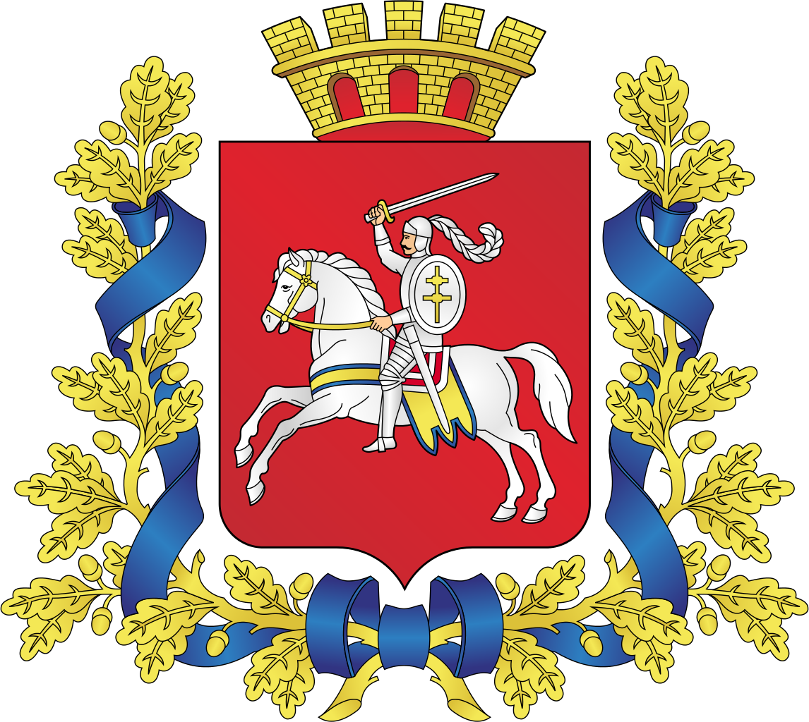
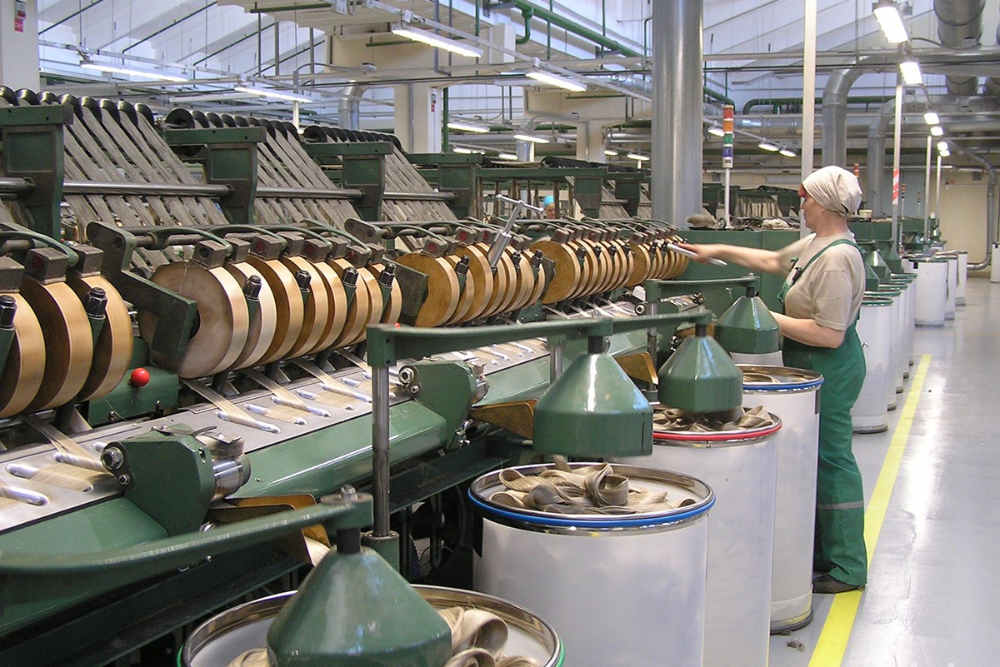

Добро пожаловать в Витебскую область!
Географическая информация
Витебская область - самый северный регион страны. На северо-западе
граничит с Латвией, на западе - с Литвой, на севере и востоке - с
Российской Федерацией. Площадь - 40,1 тыс. кв.км. Крайняя северная точка
Беларуси - в Верхнедвинском районе севернее Освейского озера. Ее
координаты - 56°10' северной широты и 28°07' восточной долготы. Жители
Витебской области по праву гордятся тем, что на территории их региона
находится не один центр Европы, а сразу два. Первый, по расчетам ученых,
произведенным в 2000 году, пришелся на середину озера Шо. А в 2008 году
в центре Полоцка был установлен памятный знак, свидетельствующий, что
центр континента находится как раз в этом городе. Древний ледник оставил
в Браславском Поозерье более 10 видов рельефа, ставших одной из главных
особенностей края. На Витебщине есть и живописные холмы, и моренные
гряды, многочисленные болота, реки и озера.
 


Промышленность
пищевая промышленность которая представлена предприятиями, входящими в
состав ГО ”Витебский концерн ”Мясо-молочные продукты“,ОАО ”Витебский
ликеро-водочный завод ”Придвинье“, ОАО ”Витебский маслоэкстракционный
завод“ , КУП ”Витебский кондитерский комбинат ”Витьба“ и др. С целью
создания условий для дальнейшего развития сельхозпроизводства области,
обеспечения полной загрузки мясокомбинатов и молокозаводов в области
применена мировая практика по созданию интеграционных структур – созданы
7 агропромышленных объединений. · легкая промышленность которая
представлена РУПТП ”Оршанский льнокомбинат“, СООО ”Белвест“,
предприятиями холдинга ООО ”Белорусская кожевенно-обувная компания
”Марко“, ОАО ”Витебские ковры“, ОАО ”Знамя индустриализации“, ООО ”Белль
Бимбо плюс“ и др. Дальнейшее развитие предприятий легкой промышленности
связано с внедрением новых технологий, совершенствованием
конструирования и моделирования швейных изделий и обуви с использованием
новых материалов с высокими потребительскими характеристиками. ·
стройиндустрия – это предприятия Министерства строительства и
архитектуры Республики Беларусь (ОАО ”Доломит“, филиал
”Новополоцкжелезобетон“ ,ОАО ”Завод керамзитового гравия г.Новолукомль“
и др.). На ОАО ”Нафтан“ в целях увеличения глубины переработки нефти и
выхода светлых нефтепродуктов реализуются инвестиционные проекты, в
результате которых будет обеспечен выпуск конкурентоспособной продукции.

Как появилась Витебская область?
Самое древнее поселение человека на территории современной Витебщины
исследователи относят к эпохе раннего каменного века. Известны стоянки и
поселения бронзового и железного веков. Археологи обнаружили древние
городища, курганы, где были найдены орудия труда и предметы утвари
днепро-двинской, более поздней банцеровской и других археологических
культур. Самое древнее княжество на витебской земле — Полоцкое,
располагавшееся в бассейнах Западной Двины, Березины и частично Немана.
Быстрое его возвышение — следствие выгодного географического положения
на торговом пути «из варяг в греки». Центром княжества стал город
Полоцк, возведенный на берегу Полоты, от которой он и получил свое
название. Первое упоминание о нем в «Повести временных лет» относится к
862 г. Первым князем Полоцкой державы принято считать Рогволода —
основателя династии Рогволодовичей. В XII в. единые экономические,
политические и стратегические интересы способствовали сближению
Полоцкого княжества с Витебским, выделившимся из его состава в 1101 г.
Центром нового княжества стал г. Витебск, расположенный на Западной
Двине и в урочищах рек Лучосы и Витьбы. Согласно легенде, город основан
в 974 г. киевской княгиней Ольгой. Однако в летописях первые упоминания
о нем относятся к 1021 г., когда великий князь Киевской Руси Ярослав
Мудрый передал Витебск полоцкому князю Брячиславу Изяславовичу. Полоцкие
и витебские дружины не раз участвовали в знаменитых исторических
сражениях. Например, известно, что полоцкая дружина участвовала в
походах Олега на Византию, сражались полоцкие и витебские воины под
руководством новгородского князя Александра Ярославовича (Александра
Невского) со шведами на Неве в 1240 г., а затем на Чудском озере в
1242г. В процессе феодализации (IX — XI вв.) росли и укреплялись
отдельные города. Одним из пограничных форпостов Полоцкой земли был г.
Орша, или, как он упоминается в «Повести временных лет», город Ръша
(сейчас — г. Орша), который возник около 1021 г. Для борьбы с иноземными
захватчиками на протяжении XIII в. формировалось новое государство —
Великое княжество Литовское, Русское и Жемойтское. И уже к концу XIII —
началу XIV вв. большинство белорусских земель вошло в его состав, в том
числе Витебское, Полоцкое, Лукомльское и Друцкое княжества. В XV-XVI вв.
Полоцк и Витебск являлись значимыми торговыми и культурными центрами.
Торговля велась не только с другими территориями Великого княжества
Литовского, но и с Германией, Чехией, Италией, Венгрией, московскими
государствами и др. Объединение белорусских земель в составе ВКЛ сыграло
существенную роль в становлении белорусского этноса. Шло формирование
белорусского языка, народной одежды, своеобразия народного быта. Полоцк
дал мировой культуре великого Ф. Скорину (около 1490 — 1551). Он
известен как гуманист, первопечатник, и как автор предисловий и
послесловий к издаваемым им книгам, которые обязательно украшали
гравюры. Интенсивно в этот период развивалась и архитектура. Она
сочетала в себе традиции зодчества Беларуси XI — ХIII вв. и влияние
архитектуры Западной Европы. В это время строились преимущественно
крепости и замки, дворцы и культовые сооружения. Наиболее мощные
крепости были возведены в Витебске и Полоцке. Княжеские дворцы, храмы
стали расписывать фресками. Широко была развита графика, книги
украшались миниатюрами, заставками, где изображались исторические и
батальные сцены, портретами известных святых и князей. Образцом такого
оформления книг считается Оршанское евангелие. В начале XVI в. княжества
Витебщины перестали существовать. В результате
административно-территориалъной реформы ВКЛ были образованы в 1504 г.
-Полоцкое, а в 1508 г. — Витебское воеводства. Несмотря на войны и
периодическое обострение отношений с соседними государствами, в конце
XVI — XVII вв. Витебск продолжал оставаться крупным административным,
ремесленным и торговым центром воеводства, в котором проживало около 10
тыс. жителей. В городе существовала развитая система образования.
Начиная с XVI в. при православных, католических, а затем и при
протестантских храмах и монастырях работали школы. В 1498 г. Полоцк, а в
1597 г. Витебск получили магдебургское право, В 1620 г. оно было
предоставлено Орше. Магдебургское право дало возможность Полоцку и
Витебску иметь свои гербы. Население Витебщины было в основном
православным. Включение витебских земель в состав Речи Посполитой
привело к распространению католицизма. Начали строить костелы, появились
католические монастыри. В 1629 г. в Витебске действовал фарный
(доминиканский) костел, в 1676 г. был построен монастырь бернардинцев с
костелом св. Антония. В 1682 г. открыт Витебский иезуитский коллегиум.
Крупным религиозным и культурным центром в XVI в. становится Орша. В
противовес католической экспансии с 1592 г. на территории Оршанщины
стали действовать православные братства. На Оршанщине работали известные
резчики по дереву, гравировщики, ювелиры, чеканщики и оружейники. В
Полоцке в это время действовали Полоцкий монастырь бернардинцев,
униатские и православные монастыри. В 1581 г. основан Полоцкий
иезуитский коллегиум, при котором действовала Полоцкая типография. После
принятия Брестской унии Полоцкий Софийский собор стал кафедральным
униатским собором. В 1796 г. путем объединения Могилевской, Псковской
губерний и Полоцкого наместничества была создана Белорусская губерния с
центром в г. Витебске, а в 1802 г. была создана Витебская губерния.
Размещение в Витебске резиденции белорусских генерал-губернаторов, а
затем объявление его центром созданной губернии имело важное значение
для развития города. Ко второй половине XVIII в. он стал вторым по
величине (после Могилева) городом Беларуси. В 1777 г. в нем начало
действовать первое промышленное предприятие — кожевенное, позже возникли
кафельное, канатное, известковое. С 1797 г. работала Витебская
губернская типография. Большое значение для роста и развития земель
Витебщины в целом имело включение ее в систему общероссийского рынка
благодаря тому, что ряд городов, в частности, Витебск, находились на
берегу реки Западная Двина. Тяжелые испытания вынесла Витебщина во время
Отечественной войны 1812 года, когда на ее территории происходили
ожесточенные битвы. Согласно переписи 1897 г., в Витебске — центре
губернии — проживал 65871 житель. В 1866 г. через город была проложена
Рига-Орловская железная дорога, позже железнодорожные линии соединили
город с Москвой, Петербургом, Киевом, Брестом. Крупными городами
Витебской губернии в этот период являлись Витебск, Полоцк и Орша. На
общественную жизнь Витебщины XIX в. оказывали влияние идеи
освободительного движения. В Витебске прошла юность И. И. Горбачевского
(будущего декабриста), который окончил Витебскую гимназию. В мае-октябре
1821 г. в городе жил Н. М. Муравьев, один из организаторов «Северного
общества» декабристов. В Полоцке и Бешенковичах служил декабрист А. А.
Бестужев-Марлинский. В Полоцке с сентября 1900 г. до весны 1901 г.
проживал революционер И. В. Бабушкин. Население принимало участие в
Первой русской революции 1905-1907 гг. В 1905 г. стачки солидарности с
рабочими Москвы проходили в Витебске, Полоцке, Орше и других городах и
местечках губернии. Накануне первой мировой войны в Витебске проживало
109 тыс. человек. Город продолжал оставаться одним из крупнейших
промышленных центров Западного края, где действовало 45 фабрик и
заводов, на которых работало около 8 тыс. человек. О событиях
Февральской революции в губернии стало известно в начале марта 1917 г.
На Витебщине Советы были созданы в Полоцком и Дриссенском уездах — 7
марта, в г. Полоцке — 15 марта, в г. Витебске — 20 марта. 10-17 декабря
1917г. состоялся I чрезвычайный съезд Витебского губернского Совета
рабочих, солдатских, крестьянских и батрацких депутатов, который
законодательно закрепил Советскую власть в Витебской губернии и избрал
губисполком. В связи с созданием Литовско-Белорусской ССР (февраль 1919
г.) и оккупацией польскими войсками части Беларуси (февраль-август 1919
г.) Витебская губерния была передана РСФСР. Несмотря на все тяготы
военного времени, к началу 20-х годов город превратился в крупнейший
культурный центр. Еще в 1918 г. в Витебске были организованы
симфонический оркестр и народная консерватория. По инициативе художника
Марка Шагала открыта народная художественная школа (впоследствии
переименованная в Витебское художественное училище), основаны Витебский
губернский музей и государственная художественно-декоративная
мастерская. В городе жили и творили такие известные художники и
философы, как К. Л. Богуславская, М. В. Добужинский, В. М. Ермолаева, К.
С. Малевич, И. А. Пуни, М. М. Бахтин и многие другие, работали 3 театра,
6 клубов, действовали синематографы и т. д. В 1926-1928 гг.
промышленность Беларуси развивалась более быстрыми темпами, чем ранее. В
1927 г. только в Витебске насчитывалось 36 промышленных предприятий, на
которых было занято 7036 рабочих. Среди них льнопрядильная фабрика
«Двина», швейная фабрика «Профинтерн», чулочная фабрика им. К. Цеткин,
завод «Красный металлист». Частыми гостями на Витебщине были Я. Купала,
Я. Колас, К. Черный. Город Витебск посетили А. Толстой (1924 г.), В.
Маяковский (1927 г.) и другие известные литераторы. До Великой
Отечественной войны в области было сконцентрировано около 40% всей
обрабатывающей, текстильной промышленности республики. Накануне войны
Витебск являлся и самым крупным культурным центром области. 11 июля 1941
г. Витебск был оккупирован. С первых дней оккупации в Суражском районе
отряд Батьки Миная (М.Ф.Шмырева), созданный в июле 1941 г., вел
беспощадную борьбу с врагом. В этот же период начал свою деятельность и
отряд «Дяди Кости» (К.С.Заслонова), образованный на основе группы,
действовавшей в Оршанском подполье. Яркой страницей в историю Витебского
подполья вошли В.3.Хоружая, Е. С. Зенькова, которым было присвоено
звание Героя Советского Союза (Хоружей — посмертно), И. А. Бекишев, А.
Е. Белохвостикова, Т. А. Марудов и др. Освобождение области началось
осенью 1943 г. и продолжилось летом 1944-го во время операции
«Багратион». 26 июня 1944 г. Витебск был освобожден. За годы войны
наибольшие людские потери понесли Витебск, Полоцк, Глубокое. Из 180 тыс.
человек, которые проживали в г. Витебске в 1940 г., после изгнания
оккупантов осталось всего 118 жителей. Город был разрушен более чем на
93%. В 1967 г. за активное участие в партизанском движении, мужество и
героизм трудящихся в годы Великой Отечественной войны, за успехи в
восстановлении и развитии народного хозяйства область была награждена
орденом Ленина, г. Витебск — орденом Трудового Красного Знамени (1974
г.) Орша — орденом Отечественной войны I степени (1984 г.) В 60-70 гг.
ХХ в. в области построено много крупных современных заводов: цветных
телевизоров, белково-витаминных концентратов, «Эвистор»,
«Стекловолокно», керамзитового гравия, мебельная фабрика «Заря»,
Витебский домостроительный комбинат, производственные объединения
«Нафтан», «Полимир», «Монолит», «Электроизмеритель»,
«Оршастройматериалы» и многие другие. На карте области появились новые
города, ставшие крупными промышленными центрами Беларуси: Новополоцк и
Новолукомль. В настоящее время Витебщина — высокоразвитый промышленный и
сельскохозяйственный регион, широко известный своими духовными и
культурными традициями.

Интерестные факты
Витебская область занимает первое в Беларуси место по количеству и
площади озер.
В этом городе находится сама древняя художественная школа Беларуси,
основанная ещё в конце 19-го века
Самый старый во всей стране кинотеатр, впервые открывший свои двери для
посетителей в 1905 году, также расположен в Витебске.
Самый старый во всей стране кинотеатр, впервые открывший свои двери для
посетителей в 1905 году, также расположен в Витебске.
вернуться на главную
вернуться в начало страницы